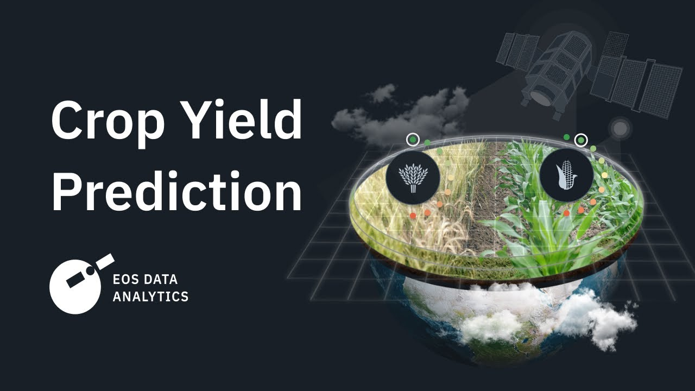

August 2023 - December 2023
Accomplished an 85% accuracy in multi-stage pose estimation by developing PAF Model Architecture & VGG for feature extraction, applying Transfer
Learning, & creating a self-contained Mini network with n convolution blocks, all utilizing PyTorch & deploying through hyperparameter tuning using
the Gradio Library
August 2023 - December 2023
Developed an emotion detection project leveraging BERT and RoBERTa Transformer models, aiming to augment sentiment analysis in text. Achieved a 30% reduction in processing time while comparing the performance of BERT and RoBERTa in analyzing emotions, showcasing their adaptability for diverse NLP tasks.
Employed statistical analysis, Neural Networks, machine learning models, & artificial intelligence to achieve a 20% improvement in solving the Rubik's
cube, with a record time of 30 seconds, by utilizing reinforcement learning & AI optimization techniques, as documented on YouTube

Built a yield estimation model in collaboration with a team of 2, utilizing Python, SQL, & statistical modeling techniques, which reduced processing
time by 40%; also constructed a corresponding cloud application employing Data Science Pipeline, ETL processes, & Spark
September 2022 - December 2022
Led a team of 4 in using Kaggle datasets & machine learning algorithms—including regression techniques, decision trees, & both supervised &
unsupervised learning—to analyze & predict mental health conditions in the tech industry; employed CRISP methodology for data pre-processing, model
development, evaluation, & performance, achieving an accuracy rate of 90%